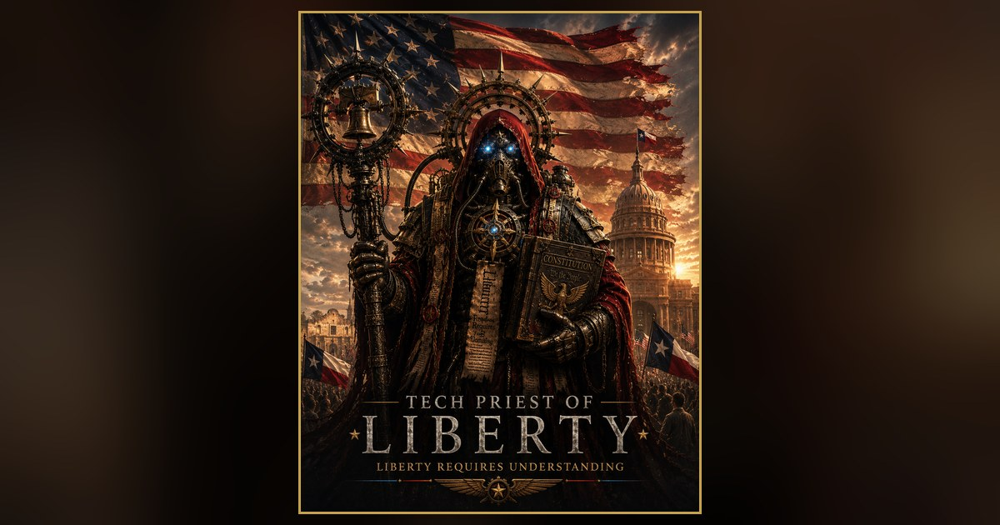

An Independence Day Address
The Tech Priest of Liberty
July 4, 2026·Fort Worth, Texas
1776 — 2026

Two hundred and fifty years ago, a handful of ordinary men put their names to a single dangerous sentence: that governments derive their just powers from the consent of the governed. They were not kings or generals. They were farmers and lawyers and printers who decided that power must answer to the people who grant it. That sentence outlived the empire it defied.
We inherit their fight, but not their enemy.
No king rules us now. What rules us is harder to name and harder to fight: systems grown so vast, so tangled, so far beyond the reach of any single citizen that people have quietly stopped believing their voice reaches anything at all. That is the tyranny of our age. Not a crown, but a locked door with no one behind it.
So let me say plainly what a free people are owed.
Your government should not be a mystery to you. Your taxes should not be a riddle only accountants can read. The machines now deciding what you see, what you're offered, and what you're denied should not operate in a language kept from you. Truth is not the private property of experts, corporations, or the well-connected. It belongs to every citizen, or the word citizen means nothing.
A republic cannot be governed by people who do not understand what governs them. This is not a complaint. It is the whole of the matter.
Liberty requires understanding.
I love Texas because Texas has never mistaken a title for a person's worth. We are a state that still believes ordinary people are capable of extraordinary things — and we are right to believe it. The farmer and the teacher. The engineer and the veteran. The officer, the nurse, the builder, the parent. The people who rise before the sun and hold civilization together without applause and without asking for any. Those are the people I trust. Those are the people I answer to.
If you were born on this soil, you belong here. And if you came to this country to build an honest life, to honor its Constitution, to keep its laws and carry its history forward — you belong here too. Citizenship was never a matter of geography. It is a matter of stewardship. It is what you are willing to leave behind you better than you found it.
I am not running to rule anyone. I have no appetite for it. I am running to restore something we let slip while we weren't watching: that this government belongs to the people who fund it and obey it and bury their dead for it. That technology should hand power to citizens, not quietly take it from them. That transparency is not a courtesy — it is the thing corruption cannot survive.
Truth matters. Character matters. Service matters. We do not rise by being served. We rise by serving.
So I ask one thing of you today, and it costs no vote and no dollar.
Leave this country better than you found it. Leave Texas better than you found it. Teach someone what you know. Build something that outlasts you. Tell the truth when a lie would be easier. Keep your word when no one is holding you to it. Help your neighbor before you're asked. Guard your liberty as though your children's depends on it — because it does.
Happy Independence Day.
God bless Texas, and God bless the United States of America.